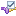
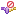
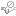
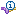
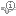
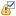
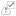
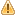
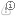

Alarm Icons
Alarms in CSS are described by icons, where each icon represents a specific combination of latched and current alarm
severity. Most of the icons are provided in two different states: enabled and disabled. The disabled icon is usually
a greyed out version of the enabled icons.
-  ()
Acknowledged invalid severity (disabled)
-  ()
Un-acknowledged invalid severity (disabled)
-  ()
Un-acknowledged invalid severity and cleared (OK) current severity (disabled)
- ()
Acknowledged major severity (disabled)
- ()
Un-acknowledged major severity (disabled)
- ()
Un-acknowledged major severity and cleared (OK) current severity (disabled)
-  ()
Acknowledged minor severity (disabled)
-  ()
Un-acknowledged minor severity (disabled)
- ()
Un-acknowledged minor severity and cleared (OK) current severity (disabled)